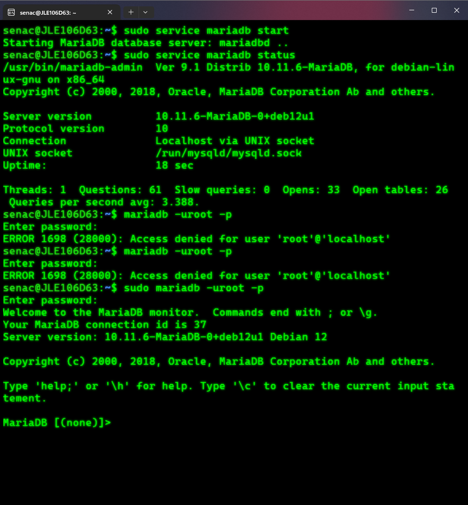
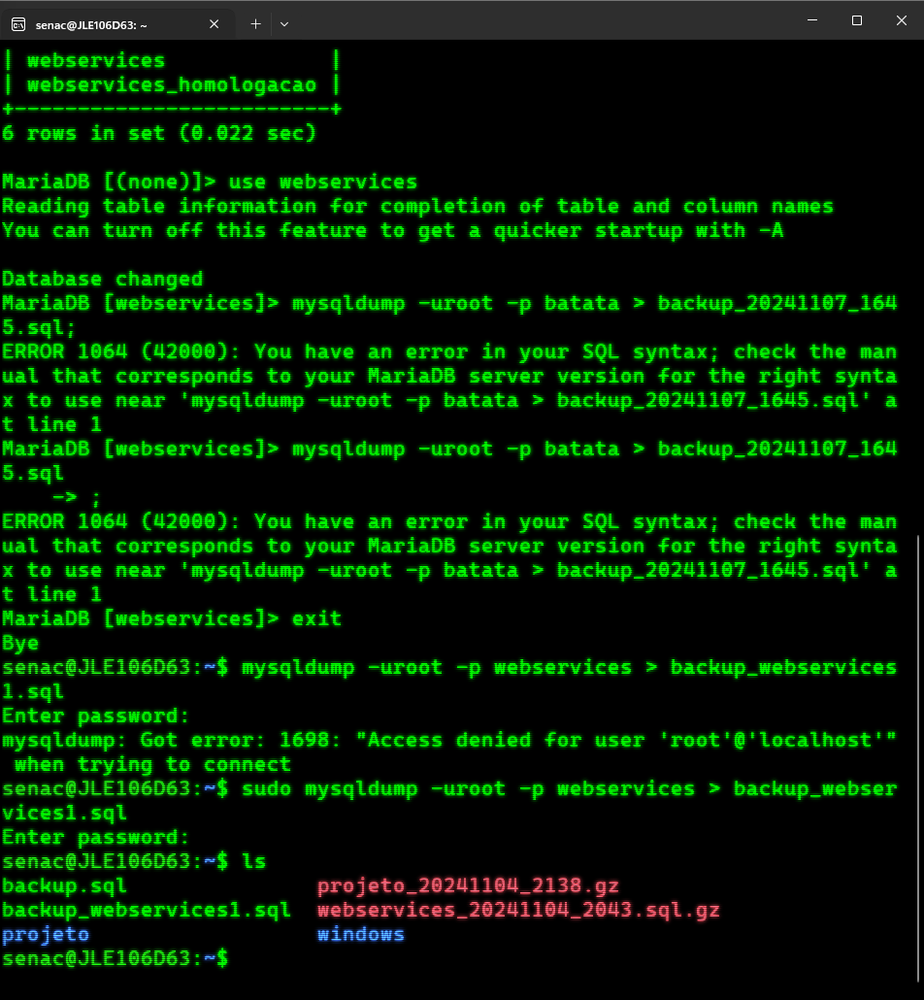
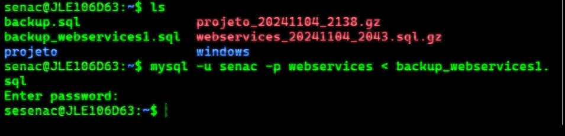

Aplicação web são soluções de software que rodam sem a necessidade da instalação do mesmo na máquina. De forma geral elas rodam no navegador web e dependem de um servidor para online para funcionar. Existem diferentes definições de tipos de aplicação web, mas as duas que mais encontrei referencias a respeito foram as aplicações estáticas e as dinâmicas.Aplicações estáticas só mudam quando atualizadas manualmente, por isso tem esse nome. Elas não exige muito processamento por parte do servidor e nem tem conexão com banco de dados.Já as aplicações dinâmicas possuem uma programação mais robusta, alto processamento por parte do servidor, são muito mais complexas e possuem conexão com banco de dados.
Fontes:https://blog.sirius.education/aplicacao-web/https://rockcontent.com/br/blog/aplicacao-web/
https://www.intelivita.com/blog/types-of-web-applications/
Domínio é um nome que se dá ao "endereço" do local onde determinada página, aplicação, api ou etc está hospedado na web. O domínio em sí não é o endereço, mas sim um nome único que referencia um local específico. Um site pode mudar de domínio sem trocar onde está hospedado, por exemplo.
Já um DNS é um sistema que "traduz" o domínio em um endereço ip. Esse que seria, de fato, o endereço da aplicação. O DNS então basicamente olha apra o endereço do site e verifica a qual IP ele está se referindo, enviando a requisição para local apropriado.
Fontes:
https://mastersite.com.br/suporte/artigos/o-que-e-dominio-e-dns
A diferença é que um servidor dedicado hospeda uma única aplicação, enquanto um compartilhado hospeda diversas. A maior vantagem do compartilhado é seu preço mais acessível devido ao compartilhamento dos custos entre as outras aplicações. A desvantagem, além das limitações específicas do serviço usado, é que caso uma das aplicações derrube o servidor devido a um erro todos os serviços hospedados naquela máquina vão cair também.
Um servidor dedicado não só evita esse problema, como também dá aos donos da aplicação mais liberdade. Sem precisar se preocupar com outros programas na mesma máquina, eles podem mais facilmente agendar manutenções, expandir o software ou realizar outras ações que, de outra maneira, impactariam tudo que estivesse rodando naquela máquina.
Um servidor web é uma máquina cujo principal propósito é prover serviços a outras máquinas conectadas na web.
Os dois principais tipos de servidores são os estáticos e os dinâmicos. Servidores estáticos hospedam sites que não tem conexão com o banco de dados, e portanto são mais leves. Já o dinâmico permite aplicações com essa conexão, exigindo maior capacidade de armazenamento e processamento por aplicação.
Realizando backup de um projeto de forma compactada e como restaurá-lo:
Passo 1:
Fontes:https://www.storageja.com.br/post/o-que-e-um-servidor?srsltid=AfmBOopfQ9aTIlkV1A67SGeIKGoNRmot-qUIakolnrha6TqMJFit71nF
Um servidor de banco de dados é, como o nome sujere, um servidor cujo propósito é rodar um banco de dados. Esse que normalmente é acessado por uma ou mais aplicações localizadas em outro(s) servidores.
Fazendo o backup e restauração de um banco de dados em um sistema Linux Debian
Primeiro é necessário iniciar o banco de dados com o comando: sudo service mariadb startDepois você pode verificar se ele está rodando com o comando: sudo service mariadb status Se o banco estiver rodando é necessário entrar no MariaDB, note que também é necessário usar o sudo. Como mostrado com os erros da imagem de exemplo. O comando então fica: sudo mariadb -uroot -p Note que usamos o -uroot como perfil, mas com as permissões certas poderíamos usar outro perfil. Como o senac, no caso do exemplo.
Agora que estamos dentro do MariaDB, temos que terminar todos os comandos com ; Primeiramente, para vermos os bancos de dados existentes usamos o comando show databases; Então escolhemos um banco de dados, nesse caso o webservices e informamos que iremos utiliza-lo com o comando: use webservices Uma vez feito isso precisamos copiar o banco de dados para um arquivo sql que iremos nomear. O comando para isso é: mysqldump -uroot -p webservices > backup_webservices1.sql Nessa linha note que eu esqueci de substituir o nome de exemplo do banco de dados nas primeiras tentativas, resultando em erro. Note também que o nome do arquivo resultante é determinado nesse momento, portanto pode seguir o padrão que for mais conveniente para você. Note também que esse comando deve ser utilizado fora do MariaDB e com sudo, ou ele também apresentará erros conforme o visto no exemplo. Uma vez feito isso pode-se usar o comando ls para vizualizar o arquivo de backup criado.
Uma vez tendo o backup pronto basta saber como copiá-lo para o banco de dados novamente. Esse comando também deve ser utilizado fora do MariaDB. O comando é: mysql -u senac -p webservices < backup_webservices1.sql Note que dessa vez ao invez de usar o -uroot estou utilizando o usuario senac que também tem a permissão de executar esse comando.
Serviço ssh é uma sigla que significa
Fontes:https://rockcontent.com/br/blog/ssh/
Linux é um sistema operacional open source com diversas distribuições, cada uma com um foco diferente. Nos servidores web as distribuições Linux mais comuns são Red Hat Enterprise Linux,CentOS e Debian
Fontes:https://linuxsemfronteiras.com.br/distribuicoes-linux-mais-usadas-em-servidores/
1- Sudo: Permite executar uma ação com premissão de root
2- apt update: Verifica atualização disponíveis
3- apt upgrade: instala updates disponíveis previamente detectados
4- apt install nomeExemplo: instala uma aplicação chamada nomeExemplo